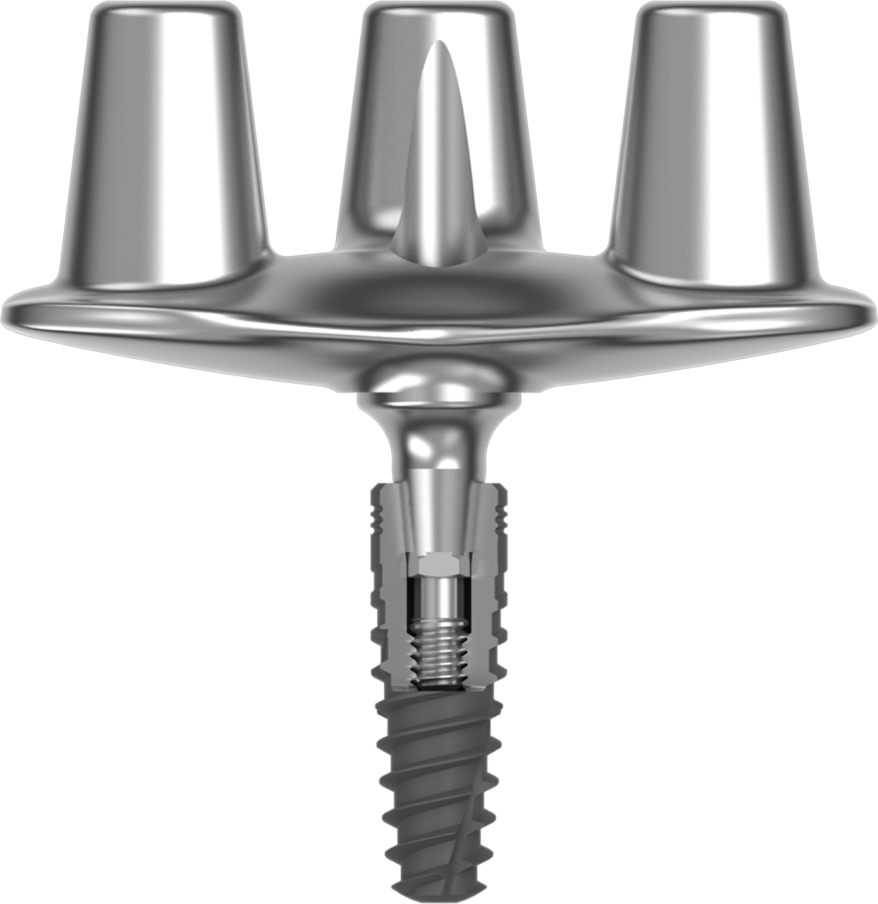

A nova era da implantodontia

Engenharia de precisão pensada para entregar previsibilidade, estabilidade e desempenho biomecânico em casos complexos.
O T Connect foi avaliado por meio de análises por elementos finitos (FEA), simulando diferentes condições clínicas e cargas mastigatórias.
Distribuição equilibrada de tensões no sistema
Comportamento biomecânico estável em diferentes materiais
Níveis de estresse dentro de limites clinicamente aceitáveis
Estudos clínicos demonstram baixa perda óssea marginal ao longo do tempo, condições peri-implantares estáveis e alta previsibilidade em reabilitações com múltiplas coroas sobre um único implante.
Ciência aplicada e validada na prática clínica.
O T Connect será apresentado ao público especializado durante o 31º Congresso Brasileiro de Periodontia e Implantodontia.

Fale agora com um especialista
e descubra como integrar o T Connect à sua prática